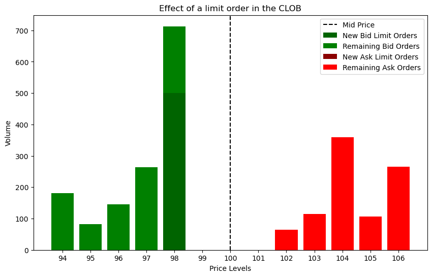

Market Microstructure#
The Central Limit Order Book#
Visualization of the order book#
import matplotlib.pyplot as plt
import numpy as np
# Define bid and ask prices
bid_prices = np.array([94, 95, 96, 97, 98, 99]) # Bid price levels
ask_prices = np.array([101, 102, 103, 104, 105, 106]) # Ask price levels
# Randomize volumes for bids and asks
np.random.seed(45) # For reproducibility
bid_volumes = np.random.randint(50, 400, size=len(bid_prices)) # Random volumes for bids
ask_volumes = np.random.randint(50, 400, size=len(ask_prices)) # Random volumes for asks
# Empty volumes for levels close to the mid-price (bid at 99 and ask at 101)
bid_volumes[5] = 0 # Bid close to mid (price 99)
ask_volumes[0] = 0 # Ask close to mid (price 101)
# Calculate the best bid and ask prices and their volumes
# Best bid: highest bid price with non-zero volume
nonzero_bid_indices = np.where(bid_volumes > 0)[0]
if len(nonzero_bid_indices) > 0:
best_bid_price = bid_prices[nonzero_bid_indices].max()
best_bid_index = np.where(bid_prices == best_bid_price)[0][0]
best_bid_volume = bid_volumes[best_bid_index]
else:
best_bid_price = None
best_bid_volume = 0
# Best ask: lowest ask price with non-zero volume
nonzero_ask_indices = np.where(ask_volumes > 0)[0]
if len(nonzero_ask_indices) > 0:
best_ask_price = ask_prices[nonzero_ask_indices].min()
best_ask_index = np.where(ask_prices == best_ask_price)[0][0]
best_ask_volume = ask_volumes[best_ask_index]
else:
best_ask_price = None
best_ask_volume = 0
# Calculate mid-price and spread
if best_bid_price is not None and best_ask_price is not None:
mid_price = (best_bid_price + best_ask_price) / 2
spread = best_ask_price - best_bid_price
else:
mid_price = None
spread = None
# Calculate imbalance between best bid and ask volumes
total_volume = best_bid_volume + best_ask_volume
if total_volume > 0:
imbalance = (best_bid_volume - best_ask_volume) / total_volume
else:
imbalance = None
# Create figure and axes
fig, ax = plt.subplots(figsize=(10, 6))
# Plot bid bars (leave a gap near the mid-price)
ax.bar(bid_prices, bid_volumes, color='green', align='center', label='Bid Orders')
# Plot ask bars (leave a gap near the mid-price)
ax.bar(ask_prices, ask_volumes, color='red', align='center', label='Ask Orders')
# Mid-price line
if mid_price is not None:
ax.axvline(mid_price, color='black', linestyle='--', label=f'Mid Price')
else:
ax.axvline(100, color='black', linestyle='--', label='Mid Price')
# Adding x-axis ticks for every integer price level from min to max price
all_price_levels = np.arange(min(bid_prices.min(), ask_prices.min()), max(bid_prices.max(), ask_prices.max()) + 1)
ax.set_xticks(all_price_levels)
ax.set_xticklabels(all_price_levels)
# Labels and title
ax.set_ylabel('Volume')
ax.set_xlabel('Price Levels')
ax.set_title('Central Limit Order Book (Market Depth)')
ax.legend()
# Show the plot
plt.show()
# Print the calculated values
print("Calculated Market Metrics:")
if best_bid_price is not None:
print(f"Best Bid Price: {best_bid_price}, Volume: {best_bid_volume}")
else:
print("No bids available.")
if best_ask_price is not None:
print(f"Best Ask Price: {best_ask_price}, Volume: {best_ask_volume}")
else:
print("No asks available.")
if mid_price is not None and spread is not None:
print(f"Mid-Price: {mid_price:.2f}")
print(f"Spread: {spread:.2f}")
else:
print("Mid-Price and Spread are not available.")
if imbalance is not None:
print(f"Imbalance between best bid and ask: {imbalance:.2f}")
else:
print("Imbalance is not available due to zero total volume at best bid and ask.")

Calculated Market Metrics:
Best Bid Price: 98, Volume: 213
Best Ask Price: 102, Volume: 65
Mid-Price: 100.00
Spread: 4.00
Imbalance between best bid and ask: 0.53
Effect of a market order in the CLOB#
import matplotlib.pyplot as plt
import numpy as np
# Define bid and ask prices
bid_prices = np.array([94, 95, 96, 97, 98, 99]) # Bid price levels
ask_prices = np.array([101, 102, 103, 104, 105, 106]) # Ask price levels
# Randomize volumes for bids and asks
np.random.seed(45) # For reproducibility
bid_volumes = np.random.randint(50, 400, size=len(bid_prices)) # Random volumes for bids
ask_volumes = np.random.randint(50, 400, size=len(ask_prices)) # Random volumes for asks
# Empty volumes for levels close to the mid-price (bid at 99 and ask at 101)
bid_volumes[5] = 0 # Bid close to mid
ask_volumes[0] = 0 # Ask close to mid
# Arrays to track consumed volumes (for visualization)
consumed_bid_volumes = np.zeros(len(bid_volumes))
consumed_ask_volumes = np.zeros(len(ask_volumes))
mid_price = 100 # Initial mid-price before market order execution
# Simulate market order input
market_order_size = 500 # For example, 500
market_order_side = "buy" # For example, 'buy'
# Function to simulate the market order
def execute_market_order(order_size, order_side):
global bid_volumes, ask_volumes, consumed_bid_volumes, consumed_ask_volumes
executed_volume = 0
executed_value = 0
if order_side == 'buy': # Market order to buy shares
remaining_size = order_size
for i in range(len(ask_prices)):
if ask_volumes[i] > 0:
tradable_volume = min(ask_volumes[i], remaining_size)
executed_volume += tradable_volume
executed_value += tradable_volume * ask_prices[i]
consumed_ask_volumes[i] += tradable_volume # Track consumed volume
ask_volumes[i] -= tradable_volume
remaining_size -= tradable_volume
if remaining_size <= 0:
break
elif order_side == 'sell': # Market order to sell shares
remaining_size = order_size
for i in range(len(bid_prices)-1, -1, -1): # Start from highest bid
if bid_volumes[i] > 0:
tradable_volume = min(bid_volumes[i], remaining_size)
executed_volume += tradable_volume
executed_value += tradable_volume * bid_prices[i]
consumed_bid_volumes[i] += tradable_volume # Track consumed volume
bid_volumes[i] -= tradable_volume
remaining_size -= tradable_volume
if remaining_size <= 0:
break
# Calculate the average execution price
execution_price = executed_value / executed_volume if executed_volume > 0 else 0
return execution_price
# Function to recalculate the mid-price based on the updated order book
def recalculate_mid_price():
global bid_prices, bid_volumes, ask_prices, ask_volumes
# Get the best bid price (highest bid price with non-zero volume)
if np.any(bid_volumes > 0):
best_bid = np.max(bid_prices[bid_volumes > 0])
else:
best_bid = np.nan # No bids in the book
# Get the best ask price (lowest ask price with non-zero volume)
if np.any(ask_volumes > 0):
best_ask = np.min(ask_prices[ask_volumes > 0])
else:
best_ask = np.nan # No asks in the book
# Recalculate mid-price
if not np.isnan(best_bid) and not np.isnan(best_ask):
new_mid_price = (best_bid + best_ask) / 2
elif not np.isnan(best_bid):
new_mid_price = best_bid # Only bids are available
elif not np.isnan(best_ask):
new_mid_price = best_ask # Only asks are available
else:
new_mid_price = np.nan # No bids or asks in the book
return new_mid_price
# Updated function to visualize the order book
def plot_order_book(order_side, mid_price):
fig, ax = plt.subplots(figsize=(10, 6))
# Plot remaining bid orders in green
ax.bar(bid_prices, bid_volumes, color='green', align='center', label='Remaining Bid Orders')
# Plot remaining ask orders in red
ax.bar(ask_prices, ask_volumes, color='red', align='center', label='Remaining Ask Orders')
# Plot consumed liquidity based on the order side
if order_side == 'buy':
# Plot consumed ask liquidity on top with a hatch pattern
if np.any(consumed_ask_volumes > 0):
ax.bar(ask_prices, consumed_ask_volumes, bottom=ask_volumes, color='red', align='center',
label='Consumed Ask Liquidity', hatch='\\\\', edgecolor='red', alpha=0.7)
elif order_side == 'sell':
# Plot consumed bid liquidity on top with a hatch pattern
if np.any(consumed_bid_volumes > 0):
ax.bar(bid_prices, consumed_bid_volumes, bottom=bid_volumes, color='green', align='center',
label='Consumed Bid Liquidity', hatch='//', edgecolor='green', alpha=0.7)
# Mid-price line
if not np.isnan(mid_price):
ax.axvline(mid_price, color='black', linestyle='--', label=f'Mid Price')
else:
ax.axvline(mid_price, color='black', linestyle='--', label='Mid Price Unavailable')
# Adding x-axis ticks for every integer price level from min to max price
all_price_levels = np.arange(min(bid_prices.min(), ask_prices.min()), max(bid_prices.max(), ask_prices.max()) + 1)
ax.set_xticks(all_price_levels)
ax.set_xticklabels(all_price_levels)
# Labels and title
ax.set_ylabel('Volume')
ax.set_xlabel('Price Levels')
ax.set_title('Effect of a Market Order in the CLOB')
# Custom legend to include only relevant labels
handles, labels = ax.get_legend_handles_labels()
by_label = dict(zip(labels, handles))
# Filter the legend labels based on the order side
if order_side == 'buy':
by_label.pop('Consumed Bid Liquidity', None)
elif order_side == 'sell':
by_label.pop('Consumed Ask Liquidity', None)
ax.legend(by_label.values(), by_label.keys())
plt.show()
# Execute the market order and update the order book
execution_price = execute_market_order(market_order_size, market_order_side)
# Recalculate the mid-price based on the updated order book
new_mid_price = recalculate_mid_price()
# Plot the updated order book with the new mid-price
plot_order_book(market_order_side, new_mid_price)
# Output the execution price and the new mid-price
print(f"The average execution price for the market order is: {execution_price:.2f}")
if not np.isnan(new_mid_price):
print(f"The new mid-price after the market order execution is: {new_mid_price:.2f}")
else:
print("The mid-price is unavailable due to no bids or asks in the book.")

The average execution price for the market order is: 103.51
The new mid-price after the market order execution is: 101.00
Effect of a limit order in the CLOB#
import matplotlib.pyplot as plt
import numpy as np
# Define bid and ask prices
bid_prices = np.array([94, 95, 96, 97, 98, 99]) # Bid price levels
ask_prices = np.array([101, 102, 103, 104, 105, 106]) # Ask price levels
# Randomize volumes for bids and asks
np.random.seed(45) # For reproducibility
bid_volumes = np.random.randint(50, 400, size=len(bid_prices)) # Random volumes for bids
ask_volumes = np.random.randint(50, 400, size=len(ask_prices)) # Random volumes for asks
# Empty volumes for levels close to the mid-price (bid at 99 and ask at 101)
bid_volumes[5] = 0 # Bid close to mid
ask_volumes[0] = 0 # Ask close to mid
# Arrays to track consumed volumes and new limit orders for visualization
consumed_bid_volumes = np.zeros(len(bid_volumes))
consumed_ask_volumes = np.zeros(len(ask_volumes))
new_bid_volumes = np.zeros(len(bid_volumes))
new_ask_volumes = np.zeros(len(ask_volumes))
mid_price = 100 # Initial mid-price before limit order execution
# Function to simulate an aggressive limit order
def execute_limit_order(order_price, order_volume, order_side):
global bid_volumes, ask_volumes, consumed_bid_volumes, consumed_ask_volumes, new_bid_volumes, new_ask_volumes
executed_volume = 0
executed_value = 0
remaining_volume = order_volume
if order_side == 'buy':
best_ask = min(ask_prices[ask_volumes > 0]) if np.any(ask_volumes > 0) else np.inf
if order_price < best_ask:
# The buy limit order remains unexecuted and gets added to the book below existing orders
insert_order_into_book(order_price, remaining_volume, 'buy', priority='low')
return 0, remaining_volume # No execution, entire order sits in the book
else:
# The buy limit order consumes liquidity like a market order up to the limit price
for i in range(len(ask_prices)):
if ask_prices[i] <= order_price and ask_volumes[i] > 0:
if ask_volumes[i] >= remaining_volume:
executed_volume += remaining_volume
executed_value += remaining_volume * ask_prices[i]
consumed_ask_volumes[i] += remaining_volume # Track consumed volume
ask_volumes[i] -= remaining_volume
remaining_volume = 0
break
else:
executed_volume += ask_volumes[i]
executed_value += ask_volumes[i] * ask_prices[i]
consumed_ask_volumes[i] += ask_volumes[i] # Track consumed volume
remaining_volume -= ask_volumes[i]
ask_volumes[i] = 0
# Any remaining volume sits in the book at the limit price
if remaining_volume > 0:
insert_order_into_book(order_price, remaining_volume, 'buy', priority='low')
elif order_side == 'sell':
best_bid = max(bid_prices[bid_volumes > 0]) if np.any(bid_volumes > 0) else -np.inf
if order_price > best_bid:
# The sell limit order remains unexecuted and gets added to the book above existing orders
insert_order_into_book(order_price, remaining_volume, 'sell', priority='low')
return 0, remaining_volume # No execution, entire order sits in the book
else:
# The sell limit order consumes liquidity like a market order up to the limit price
for i in range(len(bid_prices)-1, -1, -1): # Start from highest bid
if bid_prices[i] >= order_price and bid_volumes[i] > 0:
if bid_volumes[i] >= remaining_volume:
executed_volume += remaining_volume
executed_value += remaining_volume * bid_prices[i]
consumed_bid_volumes[i] += remaining_volume # Track consumed volume
bid_volumes[i] -= remaining_volume
remaining_volume = 0
break
else:
executed_volume += bid_volumes[i]
executed_value += bid_volumes[i] * bid_prices[i]
consumed_bid_volumes[i] += bid_volumes[i] # Track consumed volume
remaining_volume -= bid_volumes[i]
bid_volumes[i] = 0
# Any remaining volume sits in the book at the limit price
if remaining_volume > 0:
insert_order_into_book(order_price, remaining_volume, 'sell', priority='low')
# Calculate the average execution price
execution_price = executed_value / executed_volume if executed_volume > 0 else 0
return execution_price, remaining_volume
# Function to insert the remaining limit order into the order book
def insert_order_into_book(order_price, remaining_volume, order_side, priority):
global bid_prices, ask_prices, bid_volumes, ask_volumes, new_bid_volumes, new_ask_volumes, consumed_bid_volumes, consumed_ask_volumes
if order_side == 'buy': # Remaining buy order stays as a bid
# Check if the price level exists
if order_price in bid_prices:
index = np.where(bid_prices == order_price)[0][0]
if priority == 'low':
new_bid_volumes[index] += remaining_volume # Lower priority new limit order
else:
bid_volumes[index] += remaining_volume # Higher priority remaining volume
else:
# Insert a new price level
bid_prices = np.append(bid_prices, order_price)
bid_volumes = np.append(bid_volumes, 0 if priority == 'low' else remaining_volume)
new_bid_volumes = np.append(new_bid_volumes, remaining_volume if priority == 'low' else 0)
consumed_bid_volumes = np.append(consumed_bid_volumes, 0)
# Sort by price
sort_indices = np.argsort(bid_prices)
bid_prices = bid_prices[sort_indices]
bid_volumes = bid_volumes[sort_indices]
new_bid_volumes = new_bid_volumes[sort_indices]
consumed_bid_volumes = consumed_bid_volumes[sort_indices]
elif order_side == 'sell': # Remaining sell order stays as an ask
# Check if the price level exists
if order_price in ask_prices:
index = np.where(ask_prices == order_price)[0][0]
if priority == 'low':
new_ask_volumes[index] += remaining_volume # Lower priority new limit order
else:
ask_volumes[index] += remaining_volume # Higher priority remaining volume
else:
# Insert a new price level
ask_prices = np.append(ask_prices, order_price)
ask_volumes = np.append(ask_volumes, 0 if priority == 'low' else remaining_volume)
new_ask_volumes = np.append(new_ask_volumes, remaining_volume if priority == 'low' else 0)
consumed_ask_volumes = np.append(consumed_ask_volumes, 0)
# Sort by price
sort_indices = np.argsort(ask_prices)
ask_prices = ask_prices[sort_indices]
ask_volumes = ask_volumes[sort_indices]
new_ask_volumes = new_ask_volumes[sort_indices]
consumed_ask_volumes = consumed_ask_volumes[sort_indices]
# Function to recalculate the mid-price based on the updated order book
def recalculate_mid_price():
global bid_prices, bid_volumes, ask_prices, ask_volumes, new_bid_volumes, new_ask_volumes
# Calculate total bid volumes at each price level
total_bid_volumes = bid_volumes + new_bid_volumes
# Get the best bid price (highest bid price with non-zero volume)
if np.any(total_bid_volumes > 0):
best_bid = np.max(bid_prices[total_bid_volumes > 0])
else:
best_bid = np.nan # No bids in the book
# Calculate total ask volumes at each price level
total_ask_volumes = ask_volumes + new_ask_volumes
# Get the best ask price (lowest ask price with non-zero volume)
if np.any(total_ask_volumes > 0):
best_ask = np.min(ask_prices[total_ask_volumes > 0])
else:
best_ask = np.nan # No asks in the book
# Recalculate mid-price
if not np.isnan(best_bid) and not np.isnan(best_ask):
new_mid_price = (best_bid + best_ask) / 2
elif not np.isnan(best_bid):
new_mid_price = best_bid # Only bids are available
elif not np.isnan(best_ask):
new_mid_price = best_ask # Only asks are available
else:
new_mid_price = np.nan # No bids or asks in the book
return new_mid_price
# Updated function to visualize the order book
def plot_order_book(order_side, mid_price):
fig, ax = plt.subplots(figsize=(10, 6))
# For bids
# Total volumes for stacking
bid_total_volumes = new_bid_volumes + bid_volumes + consumed_bid_volumes
# Plot new bid limit orders at the bottom
ax.bar(bid_prices, new_bid_volumes, color='darkgreen', align='center',
label='New Bid Limit Orders')
# Plot existing bid orders on top of new limit orders
bid_existing_bottom = new_bid_volumes
ax.bar(bid_prices, bid_volumes, bottom=bid_existing_bottom, color='green', align='center',
label='Remaining Bid Orders')
# Plot consumed bid liquidity on top of existing orders
bid_consumed_bottom = bid_existing_bottom + bid_volumes
if np.any(consumed_bid_volumes > 0):
ax.bar(bid_prices, consumed_bid_volumes, bottom=bid_consumed_bottom, color='green', align='center',
label='Consumed Liquidity', hatch='//', edgecolor='green', alpha=0.7)
# For asks
# Total volumes for stacking
ask_total_volumes = new_ask_volumes + ask_volumes + consumed_ask_volumes
# Plot new ask limit orders at the bottom
ax.bar(ask_prices, new_ask_volumes, color='darkred', align='center',
label='New Ask Limit Orders')
# Plot existing ask orders on top of new limit orders
ask_existing_bottom = new_ask_volumes
ax.bar(ask_prices, ask_volumes, bottom=ask_existing_bottom, color='red', align='center',
label='Remaining Ask Orders')
# Plot consumed ask liquidity on top of existing orders
ask_consumed_bottom = ask_existing_bottom + ask_volumes
if np.any(consumed_ask_volumes > 0):
ax.bar(ask_prices, consumed_ask_volumes, bottom=ask_consumed_bottom, color='red', align='center',
label='Consumed Liquidity', hatch='\\\\', edgecolor='red', alpha=0.7)
# Mid-price line
if not np.isnan(mid_price):
ax.axvline(mid_price, color='black', linestyle='--', label=f'Mid Price')
else:
ax.axvline(mid_price, color='black', linestyle='--', label='Mid Price Unavailable')
# Adding x-axis ticks
all_price_levels = np.arange(min(bid_prices.min(), ask_prices.min()), max(bid_prices.max(), ask_prices.max()) + 1)
ax.set_xticks(all_price_levels)
ax.set_xticklabels(all_price_levels)
# Labels and title
ax.set_ylabel('Volume')
ax.set_xlabel('Price Levels')
ax.set_title('Effect of a limit order in the CLOB')
# Custom legend
handles, labels = ax.get_legend_handles_labels()
by_label = dict(zip(labels, handles))
ax.legend(by_label.values(), by_label.keys())
plt.show()
# Example of a buy limit order at price 102 for 700 shares
limit_order_price = 98
limit_order_volume = 500
limit_order_side = 'buy'
# Execute the limit order
execution_price, remaining_volume = execute_limit_order(limit_order_price, limit_order_volume, limit_order_side)
# Recalculate the mid-price based on the updated order book
new_mid_price = recalculate_mid_price()
# Plot the updated order book with the new mid-price
plot_order_book(limit_order_side, new_mid_price)
# Output the execution price and remaining order details
print(f"The average execution price for the limit order is: {execution_price:.2f}")
if remaining_volume > 0:
print(f"Remaining order of {remaining_volume} shares sits in the book at the limit price of {limit_order_price}.")
if not np.isnan(new_mid_price):
print(f"The new mid-price after the limit order execution is: {new_mid_price:.2f}")
else:
print("The mid-price is unavailable due to no bids or asks in the book.")

The average execution price for the limit order is: 0.00
Remaining order of 500 shares sits in the book at the limit price of 98.
The new mid-price after the limit order execution is: 100.00